AV / ACTIVITY ATLAS
Activity atlas
Explore the activity levels from my generated GitHub contribution calendar. The chart uses relative week positions, not exact dates or counts.

Select a day for details.
Source: generated output/github-snake.svg · level 0–4, not raw counts.